<title>Afet Görüntü Analizi</title>
<style>
/* layout: sticky tab rail across the top, one report visible at a time, reading column ~72ch with wide figures */
:root {
  --bg: #f6f7f5; --panel: #ffffff; --fg: #1d2421; --muted: #5d6a64; --line: #d9dfdb; --accent: #b2491d; --accent-soft: #f3e2d9; --fig-bg: #ffffff; --fig-fg: #4d5652;
  --display: "Fraunces", Georgia, "Times New Roman", serif; --body: "Source Sans 3", "Segoe UI", system-ui, sans-serif; --mono: "JetBrains Mono", ui-monospace, Menlo, monospace;
}
@media (prefers-color-scheme: dark) { :root:not([data-theme="light"]) {
  --bg: #141917; --panel: #1b2220; --fg: #e4e9e6; --muted: #9aa8a1; --line: #2e3834; --accent: #f08a5d; --accent-soft: #3a2a22; color-scheme: dark } }
:root[data-theme="dark"] { --bg: #141917; --panel: #1b2220; --fg: #e4e9e6; --muted: #9aa8a1; --line: #2e3834; --accent: #f08a5d; --accent-soft: #3a2a22; color-scheme: dark }
body { background: var(--bg); color: var(--fg); font: 16px/1.6 var(--body); }
header { padding-block: 28px 8px; padding-inline: 16px; max-width: 1100px; margin: 0 auto; }
header h1 { font-family: var(--display); font-weight: 600; font-size: clamp(1.7rem, 4vw, 2.5rem); margin: 0; text-wrap: balance; }
header p { color: var(--muted); margin: .3rem 0 0; max-width: 70ch; }
nav { position: sticky; top: env(safe-area-inset-top, 0px); z-index: 5; background: var(--bg); border-bottom: 1px solid var(--line); }
nav .in { max-width: 1100px; margin: 0 auto; padding-inline: 16px; display: flex; gap: 4px; overflow-x: auto; }
nav a { padding: 10px 12px; color: var(--muted); text-decoration: none; white-space: nowrap; border-bottom: 3px solid transparent; font-weight: 600; font-size: .95rem; }
nav a.on { color: var(--fg); border-bottom-color: var(--accent); }
nav a:focus-visible { outline: 2px solid var(--accent); outline-offset: -2px; }
main { max-width: 1100px; margin: 0 auto; padding-inline: 16px; padding-block: 8px 64px; }
.rep { display: none; } .rep.on { display: block; }
.rep h1 { font-family: var(--display); font-weight: 600; font-size: 1.85rem; line-height: 1.2; text-wrap: balance; margin: 1.4rem 0 .6rem; }
.rep h2 { font-size: 1.15rem; letter-spacing: .02em; margin: 2rem 0 .6rem; padding-top: .8rem; border-top: 1px solid var(--line); }
.rep p, .rep li { max-width: 76ch; }
.rep blockquote { margin: 1rem 0; padding: .7rem 1rem; background: var(--accent-soft); border-radius: 6px; max-width: 76ch; }
.rep blockquote p { margin: 0; }
.rep ul { padding-left: 1.2rem; }
.rep h2 + ul li::marker { color: var(--accent); }
.tw { overflow-x: auto; margin: .8rem 0 1.2rem; background: var(--panel); border: 1px solid var(--line); border-radius: 6px; }
table { border-collapse: collapse; width: 100%; font-size: .9rem; font-variant-numeric: tabular-nums; }
th, td { text-align: left; padding: 7px 10px; border-bottom: 1px solid var(--line); vertical-align: top; }
th { font-weight: 700; color: var(--muted); font-size: .78rem; text-transform: uppercase; letter-spacing: .04em; }
tr:last-child td { border-bottom: 0; }
figure { margin: 1rem 0 1.6rem; background: var(--fig-bg); border: 1px solid var(--line); border-radius: 6px; padding: 8px; }
figure img { display: block; width: 100%; height: auto; }
figcaption { color: var(--fig-fg); font-size: .85rem; padding: 6px 4px 0; }
code { font-family: var(--mono); font-size: .85em; }
a { color: var(--accent); }
@media (max-width: 600px) { body { font-size: 15px; } .rep h1 { font-size: 1.5rem; } }
</style>
<link rel="stylesheet" href="https://fonts.googleapis.com/css2?family=Fraunces:opsz,wght@9..144,600&family=Source+Sans+3:wght@400;600;700&family=JetBrains+Mono&display=swap">
<header><h1>Afet türlerine göre uydu ve hava görüntüsü analizi</h1>
<p>CENG391 — deprem, sel, heyelan, hortum, dolu, aşırı sıcak ve yangın için açık verilerle yapılan testler: yöntemler, metrikler, grafikler ve rastgele vakalar.</p></header>
<nav><div class="in"><a href="#genel" data-t="genel">Genel bakış</a><a href="#01-deprem" data-t="01-deprem">Deprem</a><a href="#02-sel" data-t="02-sel">Sel</a><a href="#03-heyelan" data-t="03-heyelan">Heyelan</a><a href="#04-hortum" data-t="04-hortum">Hortum</a><a href="#05-dolu" data-t="05-dolu">Dolu</a><a href="#06-asiri-sicak" data-t="06-asiri-sicak">Aşırı sıcak</a><a href="#07-yangin" data-t="07-yangin">Yangın</a></div></nav>
<main><section id="genel" class="rep"><h1>Afet türlerine göre uydu ve hava görüntüsü analizi — rapor dizini</h1>
<p>Her rapor: veri ve yer gerçeği, yöntemler, metrik tabloları, grafikler, rastgele vaka görselleri, sınırlar ve kaynaklar.
Kod ve ham çıktılar: <code>disaster-eval/</code> (her deney bir betik, sonuçlar <code>disaster-eval/outputs/</code>).</p>
<p>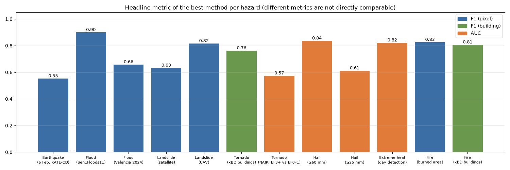</p>
<div class="tw"><table>
<thead>
<tr>
<th>afet</th>
<th>rapor</th>
<th>platformlar</th>
<th>ana sonuç</th>
</tr>
</thead>
<tbody>
<tr>
<td>Deprem</td>
<td><a href="#01-deprem">01-deprem.md</a></td>
<td>uydu VHR (Maxar/Pleiades — Google Earth sınıfı)</td>
<td>6 Şubat F1 0.55; xBD'den aktarım F1 0.11</td>
</tr>
<tr>
<td>Sel</td>
<td><a href="#02-sel">02-sel.md</a></td>
<td>uydu (Sentinel-1/2), uydu VHR (xBD)</td>
<td>11 ülke IoU 0.82; Valencia 2024 F1 0.66</td>
</tr>
<tr>
<td>Heyelan</td>
<td><a href="#03-heyelan">03-heyelan.md</a></td>
<td>uydu (Sentinel-2+DEM), hava (İHA)</td>
<td>uydu F1 0.63; İHA F1 0.82</td>
</tr>
<tr>
<td>Hortum</td>
<td><a href="#04-hortum">04-hortum.md</a></td>
<td>uydu VHR (xBD), hava (NAIP uçak)</td>
<td>xBD bina F1 0.77; Rolling Fork EF3+ AUC 0.57</td>
</tr>
<tr>
<td>Dolu</td>
<td><a href="#05-dolu">05-dolu.md</a></td>
<td>uydu (Sentinel-2) + radar MESH</td>
<td>≥60 mm AUC 0.84; ≥25 mm AUC 0.61</td>
</tr>
<tr>
<td>Aşırı sıcak</td>
<td><a href="#06-asiri-sicak">06-asiri-sicak.md</a></td>
<td>uydu (MODIS LST) + istasyon</td>
<td>r 0.65; gün tespiti AUC 0.82</td>
</tr>
<tr>
<td>Yangın</td>
<td><a href="#07-yangin">07-yangin.md</a></td>
<td>uydu (Sentinel-2), uydu VHR (xBD)</td>
<td>yanık alanı IoU 0.54–0.86; xBD bina F1 0.79</td>
</tr>
</tbody>
</table></div>
<p><strong>Google Earth hakkında:</strong> Google Earth görüntüleri kullanım koşulları gereği toplu/otomatik indirilemez. Google Earth'teki afet sonrası çok yüksek çözünürlüklü görüntülerin önemli kısmı Maxar kaynaklıdır; bu çalışmada aynı sınıftaki Maxar Open Data (xBD, KATE-CD, Kahramanmaraş 2023 olayı) kullanıldı. Hava görüntüsü olarak İHA (heyelan) ve uçak (USDA NAIP, hortum) verisi test edildi; helikopter görüntüsü için açık, etiketli bir set bulunamadı.</p></section><section id="01-deprem" class="rep"><h1>Deprem — 6 Şubat 2023 Kahramanmaraş ve xBD depremleri</h1>
<h2>Özet</h2>
<ul>
<li><strong>6 Şubat (KATE-CD, Maxar + Pleiades, 0,3–0,5 m — Google Earth sınıfı görüntü):</strong> Türkiye verisiyle eğitilen model test setinde <strong>F1 0.55</strong> (IoU 0.38); basit görüntü farkı 0.08.</li>
<li><strong>Başka depremlerden öğrenme Türkiye'ye taşınmıyor:</strong> xBD (Meksika 2017, Palu 2018 + diğer afetler) ile eğitilen 5 sınıflı model 6 Şubat'ta doğrudan <strong>F1 0.11</strong>.</li>
<li><strong>xBD içi deprem/tsunami performansı:</strong> Meksika depreminde bina bulma F1 0.76, ancak binaların yalnızca 0.9%'i hasarlı → hasar sınıfları çok seyrek. Palu tsunamisinde hasarlı/hasarsız bina F1 0.77.</li>
<li><strong>Rastgele Maxar kareleri (Antakya, Kahramanmaraş, Gaziantep, İslahiye/Nurdağı):</strong> yer gerçeği olmadığı için nitel test. İki bulgu: (1) Şubat görüntülerindeki kar ve bulut her iki modelde sahte hasarı artırıyor; (2) temiz kentsel karelerde iki model çok farklı tahmin veriyor (KATE modeli piksellerin ~%0,3'ünü, xBD modeli binaların ~%10'unu hasarlı sayıyor) — ağır hasarlı Antakya'da bile KATE modelinin neredeyse hiç hasar işaretlememesi, etiketli test setindeki F1'in yeni sahnelere doğrudan taşınmadığını gösteriyor (KATE-CD eğitim karelerinin hepsinde hasar vardı; model yüksek eşikle çalışıyor).</li>
</ul>
<h2>Veri ve yer gerçeği</h2>
<div class="tw"><table>
<thead>
<tr>
<th>set</th>
<th>platform</th>
<th>çözünürlük</th>
<th>yer gerçeği</th>
</tr>
</thead>
<tbody>
<tr>
<td>KATE-CD (HF <code>CSCRS/kate-cd</code>)</td>
<td>uydu: Maxar Open Data + Airbus Pleiades</td>
<td>0,3–0,5 m</td>
<td>elle çizilmiş hasarlı bina poligonları (486 çift, 7 il)</td>
</tr>
<tr>
<td>xBD: mexico-earthquake, palu-tsunami, sunda-tsunami</td>
<td>uydu: Maxar</td>
<td>~0,5 m (modelde ~1 m)</td>
<td>bina poligonu + 4 seviye hasar</td>
</tr>
<tr>
<td>Maxar Open Data <code>Kahramanmaras-turkey-earthquake-23</code></td>
<td>uydu: Maxar (WorldView/GeoEye)</td>
<td>~0,3–0,5 m</td>
<td>yok (nitel test)</td>
</tr>
</tbody>
</table></div>
<blockquote>
<p>Google Earth görüntüleri kullanım koşulları gereği programla indirilemez; Google Earth'teki deprem sonrası çok yüksek çözünürlüklü görüntülerin büyük kısmı zaten Maxar kaynaklıdır. Burada aynı sınıftaki Maxar Open Data kullanıldı.</p>
</blockquote>
<h2>Sonuçlar — 6 Şubat (KATE-CD test, 38 kare, piksel bazlı)</h2>
<div class="tw"><table>
<thead>
<tr>
<th>yöntem</th>
<th>precision</th>
<th>recall</th>
<th>F1</th>
<th>IoU</th>
</tr>
</thead>
<tbody>
<tr>
<td>Görüntü farkı (Lab + histogram eşleme)</td>
<td>0.045</td>
<td>0.502</td>
<td>0.083</td>
<td>0.043</td>
</tr>
<tr>
<td>U-Net (ikili), sadece xBD (4 shard) → sıfır-atış</td>
<td>0.096</td>
<td>0.130</td>
<td>0.110</td>
<td>0.058</td>
</tr>
<tr>
<td>U-Net 5 sınıf, tüm xBD → sıfır-atış, 512 ölçek</td>
<td>0.062</td>
<td>0.150</td>
<td>0.088</td>
<td>0.046</td>
</tr>
<tr>
<td>U-Net 5 sınıf, tüm xBD → sıfır-atış, 256 ölçek (çözünürlük eşlenmiş)</td>
<td>0.060</td>
<td>0.523</td>
<td>0.108</td>
<td>0.057</td>
</tr>
<tr>
<td>U-Net, sadece KATE-CD (404 eğitim karesi)</td>
<td>0.624</td>
<td>0.496</td>
<td>0.552</td>
<td>0.382</td>
</tr>
<tr>
<td>U-Net, xBD ön eğitim + KATE-CD ince ayar</td>
<td>0.571</td>
<td>0.444</td>
<td>0.500</td>
<td>0.333</td>
</tr>
</tbody>
</table></div>
<figure>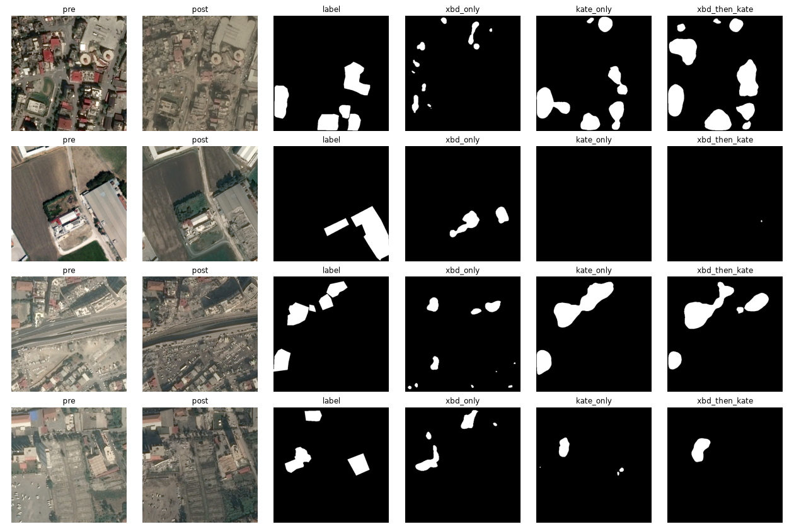<figcaption>KATE-CD test: öncesi, sonrası, etiket ve üç modelin tahmini</figcaption></figure>
<figure>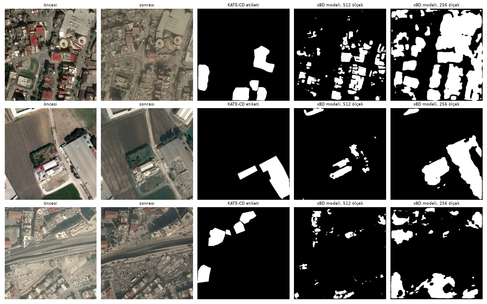<figcaption>xBD ile eğitilmiş 5 sınıflı modelin 6 Şubat'a doğrudan uygulanması</figcaption></figure>
<h2>Sonuçlar — xBD deprem / tsunami olayları</h2>
<p><strong>Model:</strong> 6 kanallı (öncesi+sonrası RGB) U-Net/ResNet18, 5 sınıf (arka plan, hasarsız, az, ağır, yıkılmış). xBD train+tier3'ten olay başına ≤250 görüntü (3304 görüntü), 1024→512 küçültülerek (~1 m/px) 12 epoch eğitildi; en iyi doğrulama xView2 skoru 0.628. Test: xBD test bölümü + tier3 olaylarının ayrılmış %20'si (1313 görüntü). <em>Hasar sınıf F1</em> = 4 hasar sınıfının harmonik ortalaması (xView2 tanımı); <em>bina</em> metrikleri bağlantılı bina bileşenleri üzerinden.</p>
<div class="tw"><table>
<thead>
<tr>
<th>olay</th>
<th>bina</th>
<th>bina bulma F1</th>
<th>hasar sınıf F1</th>
<th>hasarlı/hasarsız F1 (bina)</th>
<th>yıkılmış recall</th>
<th>gerçek hasarlı payı</th>
</tr>
</thead>
<tbody>
<tr>
<td>mexico-earthquake</td>
<td>4745</td>
<td>0.763</td>
<td>0.000</td>
<td>0.043</td>
<td>0.000</td>
<td>0.009</td>
</tr>
<tr>
<td>palu-tsunami</td>
<td>3649</td>
<td>0.782</td>
<td>0.263</td>
<td>0.767</td>
<td>0.719</td>
<td>0.168</td>
</tr>
<tr>
<td>sunda-tsunami</td>
<td>906</td>
<td>0.729</td>
<td>0.000</td>
<td>0.093</td>
<td>0.069</td>
<td>0.040</td>
</tr>
<tr>
<td><strong>earthquake (toplam)</strong></td>
<td>4745</td>
<td>0.763</td>
<td>0.000</td>
<td>0.043</td>
<td>0.000</td>
<td>0.009</td>
</tr>
<tr>
<td><strong>tsunami (toplam)</strong></td>
<td>4555</td>
<td>0.776</td>
<td>0.253</td>
<td>0.741</td>
<td>0.686</td>
<td>0.142</td>
</tr>
</tbody>
</table></div>
<figure>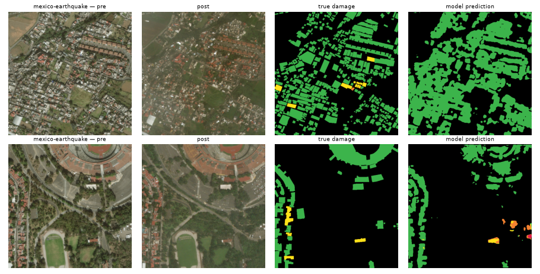<figcaption>xBD Meksika depremi rastgele test kareleri</figcaption></figure>
<h2>Rastgele vakalar — Maxar Open Data, 6 Şubat (Google Earth sınıfı)</h2>
<p>Her şehirden rastgele 256 m × 256 m kareler (0,5 m/px), en yakın deprem öncesi ve ilk deprem sonrası Maxar görüntüsü.
Kareler WorldCover'a göre ikiye ayrıldı: <em>temiz kentsel</em> (yerleşim ≥%40, kar/bulut &lt;%10) ve <em>diğer</em> (kırsal, karlı ya da bulutlu — Şubat 2023 görüntülerinin bir kısmında kar ve bulut var).
| şehir | temiz kentsel kare | KATE modeli: hasarlı piksel | xBD modeli: ağır+yıkık bina payı | diğer kare | KATE (diğer) | xBD (diğer) |
|---|---|---|---|---|---|---|
| Antakya (Hatay) | 3 | 0.005 | 0.087 | 10 | 0.002 | 0.175 |
| Kahramanmaraş merkez | 10 | 0.003 | 0.099 | 3 | 0.058 | 0.120 |
| Gaziantep merkez | 4 | 0.000 | 0.126 | 12 | 0.013 | 0.296 |
| İslahiye / Nurdağı | 0 | – | – | 16 | 0.015 | 0.063 |</p>
<p><strong>Başarısızlık modu:</strong> kar/bulut ≥%10 olan 13 karede KATE modelinin ortalama hasar tahmini 0.012, xBD modelininki 0.25; temiz kentsel 17 karede sırasıyla 0.003 ve 0.10. Kar, öncesi–sonrası farkını büyüttüğü için "hasar" olarak okunuyor; operasyonel kullanımda kar/bulut maskesi şart.
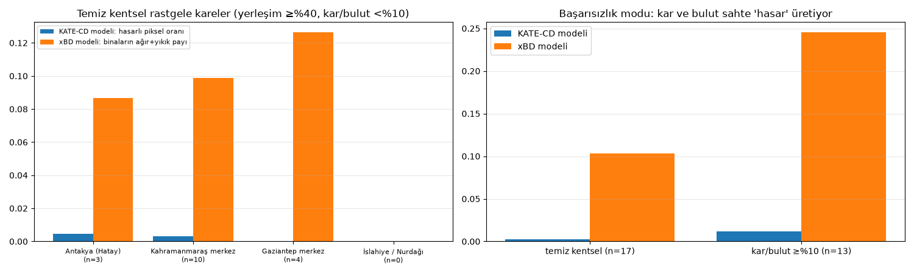
<em>Şehir bazında ortalama tahmin</em></p>
<figure>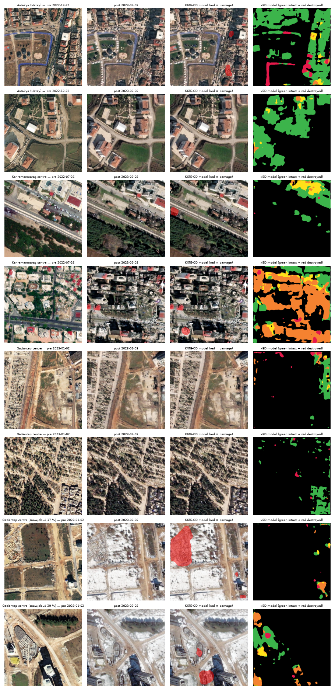<figcaption>Her şehirden en yüksek KATE tahmini alan iki temiz kentsel kare + iki kar/bulutlu kare</figcaption></figure>
<h2>Sınırlar</h2>
<ul>
<li>KATE-CD testi 38 kare; tek seed → sayılar ±birkaç puan oynayabilir. KATE-CD'de hasarsız kare yok, yanlış alarm oranı sınırlı ölçülür.</li>
<li>xBD görüntüleri 2× küçültüldü (~1 m/px); orijinal çözünürlükte bina/hasar skorları daha yüksek olur.</li>
<li>Maxar rastgele karelerinde yer gerçeği yok; öncesi/sonrası görüntüler farklı bakış açısı ve mevsimden — yanlış alarmlar görsel olarak kontrol edilmeli.</li>
</ul>
<h2>Kaynaklar</h2>
<ul>
<li>KATE-CD: https://huggingface.co/datasets/CSCRS/kate-cd (ITÜ CSCRS)</li>
<li>xBD / xView2 (Gupta ve ark., 2019), Maxar Open Data görüntüleri, CC BY-NC-SA 4.0 — HF mirror <code>hannan022/xview2-xbd</code></li>
<li>Maxar Open Data Program: https://maxar-opendata.s3.amazonaws.com/events/catalog.json</li>
</ul></section><section id="02-sel" class="rep"><h1>Sel — Sen1Floods11 (11 ülke), Valencia DANA 2024 ve xBD</h1>
<h2>Özet</h2>
<ul>
<li><strong>Uydu (Sentinel-2 optik + Sentinel-1 radar, 10 m), 11 ülke:</strong> en iyi model <strong>U-Net S1+S2 IoU 0.82</strong> (F1 0.90); eğitimsiz NDWI eşiği bile IoU 0.78. Eğitimde hiç görülmeyen Bolivya olayında U-Net S1+S2 IoU 0.79.</li>
<li><strong>Yakın tarihli büyük sel — Valencia, 29 Ekim 2024:</strong> Copernicus EMS resmi taşkın alanına (≈324 km² inceleme alanında) karşı en iyi yöntem <strong>U-Net S2 (Sen1Floods11'den aktarım): F1 0.66</strong>. İndeks eşikleri çok isabetli (precision ≈0,9+) ama taşkının yalnızca ~üçte birini buluyor.</li>
<li><strong>Kentsel sel uydudan zor:</strong> Valencia'da yerleşim alanlarında recall 0.60, tarım alanında 0.83.</li>
<li><strong>Radar tek başına:</strong> 2 gün sonraki Sentinel-1 geçişinde su çekilmeye başladığı için recall 0.18; zamanlama kritik.</li>
<li><strong>Bina hasarı (xBD sel/kasırga olayları):</strong> sel kaynaklı bina hasarı en zor türlerden — ayrıntı aşağıda.</li>
</ul>
<h2>Veri ve yer gerçeği</h2>
<div class="tw"><table>
<thead>
<tr>
<th>set</th>
<th>platform</th>
<th>çözünürlük</th>
<th>yer gerçeği</th>
</tr>
</thead>
<tbody>
<tr>
<td>Sen1Floods11 (HF <code>blumenstiel/Sen1Floods11</code>)</td>
<td>uydu: Sentinel-1 GRD + Sentinel-2 L1C</td>
<td>10 m</td>
<td>446 elle etiketli 512×512 kare, 11 olay</td>
</tr>
<tr>
<td>Valencia DANA, Ekim 2024</td>
<td>uydu: Sentinel-2 L2A (31 Eki), Sentinel-1 RTC (25 Eki, 1 Kas) — Planetary Computer</td>
<td>10 m</td>
<td>Copernicus EMS EMSR773 AOI01 taşkın sınırı</td>
</tr>
<tr>
<td>xBD: midwest-flooding, nepal-flooding, 4 kasırga</td>
<td>uydu: Maxar</td>
<td>~0,5 m</td>
<td>bina hasar seviyeleri</td>
</tr>
</tbody>
</table></div>
<h2>Sonuçlar — Sen1Floods11 test (90 kare) ve Bolivya (eğitimde görülmemiş, 15 kare)</h2>
<p>Eşikler doğrulama bölümünde seçildi (NDWI&gt;-0.05, MNDWI&gt;0.15, VV&lt;-17 dB). "Sadece taşkın" = JRC kalıcı su pikselleri hariç.
| yöntem | test IoU | test F1 | test sadece-taşkın IoU | Bolivya IoU | Bolivya F1 |
|---|---|---|---|---|---|
| NDWI | 0.776 | 0.874 | 0.688 | 0.816 | 0.898 |
| MNDWI | 0.773 | 0.872 | 0.687 | 0.703 | 0.825 |
| S1 VV threshold | 0.468 | 0.638 | 0.391 | 0.388 | 0.559 |
| U-Net S1 | 0.659 | 0.794 | 0.533 | 0.633 | 0.775 |
| U-Net S2 | 0.810 | 0.895 | 0.734 | 0.793 | 0.884 |
| U-Net S1+S2 | 0.818 | 0.900 | 0.742 | 0.791 | 0.883 |</p>
<figure>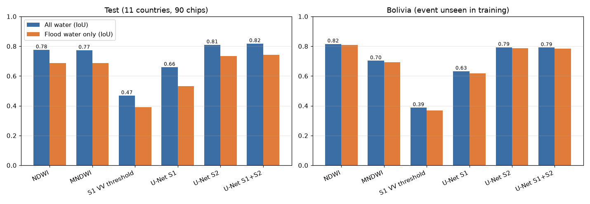<figcaption>Yöntem karşılaştırması</figcaption></figure>
<figure>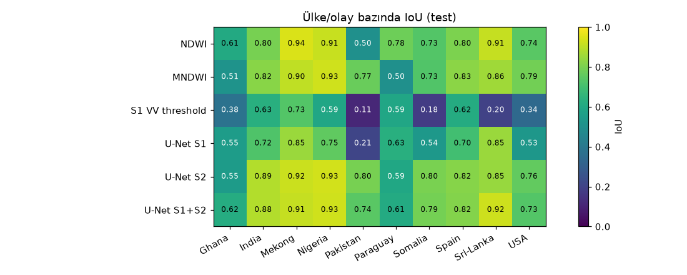<figcaption>Ülke/olay bazında IoU</figcaption></figure>
<figure>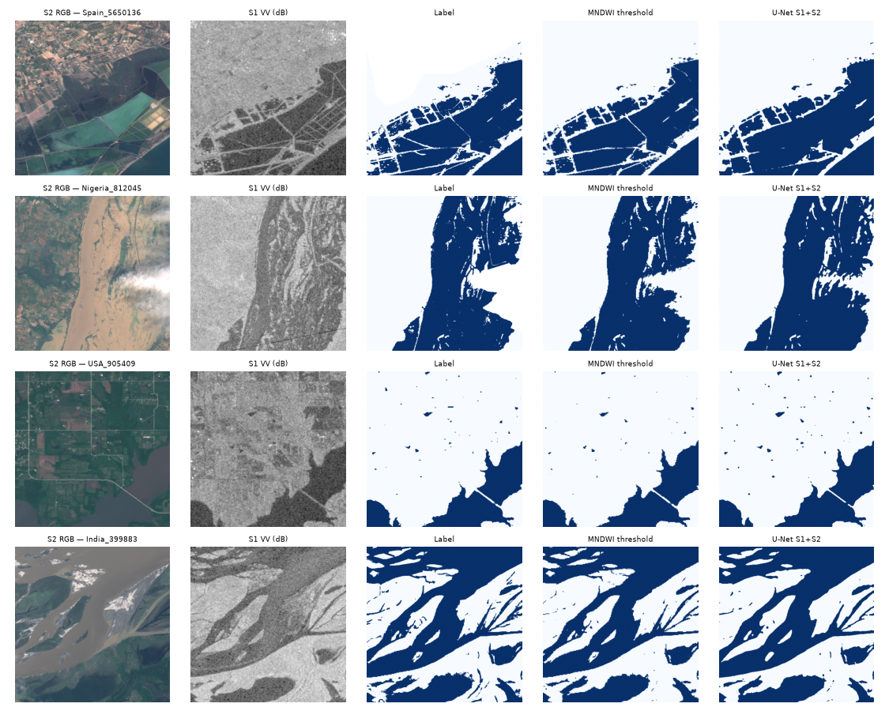<figcaption>Rastgele test kareleri</figcaption></figure>
<figure>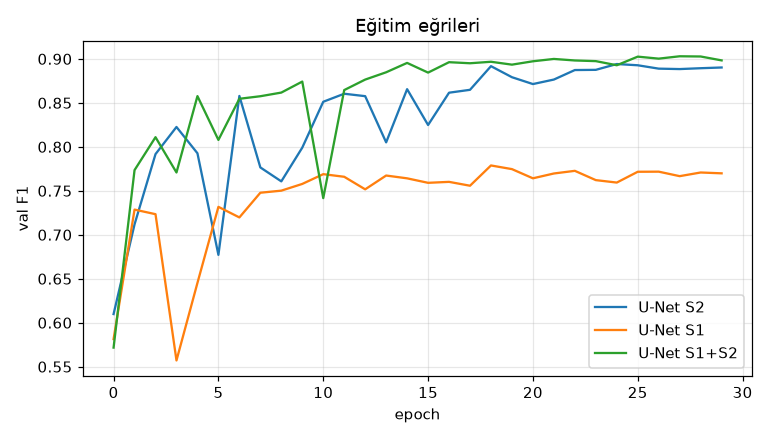<figcaption>U-Net eğitim eğrileri</figcaption></figure>
<h2>Vaka — Valencia DANA (29 Ekim 2024)</h2>
<p>Modeller <strong>yeniden eğitilmeden</strong> Sen1Floods11'den aktarıldı (S2 modeli L1C ile eğitildi, burada L2A'ya uygulandı; B10 bandı eğitim ortalamasıyla dolduruldu). Kalıcı su (ESA WorldCover) hariç.
| yöntem | precision | recall | F1 | IoU | recall (yerleşim) | recall (tarım) |
|---|---|---|---|---|---|---|
| NDWI eşik (S2, 31 Eki) | 0.930 | 0.332 | 0.489 | 0.324 | 0.104 | 0.515 |
| MNDWI eşik (S2, 31 Eki) | 0.994 | 0.346 | 0.513 | 0.345 | 0.014 | 0.551 |
| U-Net S2 (Sen1Floods11'den aktarım) | 0.575 | 0.767 | 0.658 | 0.490 | 0.599 | 0.830 |
| S1 VV eşik (1 Kas) | 0.992 | 0.179 | 0.304 | 0.179 | 0.003 | 0.265 |
| S1 değişim VV(1 Kas)−VV(25 Eki) &lt; −3 dB | 0.460 | 0.340 | 0.391 | 0.243 | 0.166 | 0.547 |
| U-Net S1 (Sen1Floods11'den aktarım) | 0.984 | 0.180 | 0.304 | 0.179 | 0.005 | 0.254 |</p>
<figure>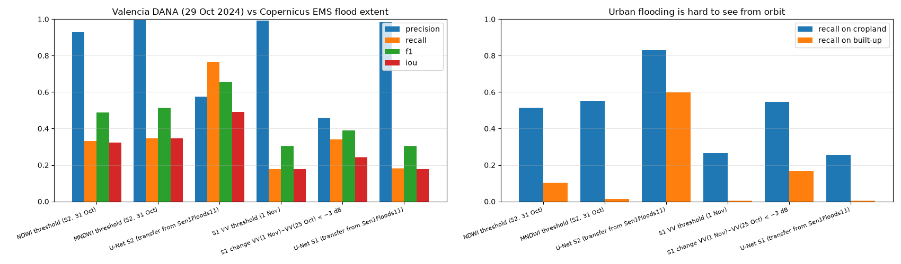<figcaption>Valencia: yöntemler ve arazi türüne göre recall</figcaption></figure>
<figure>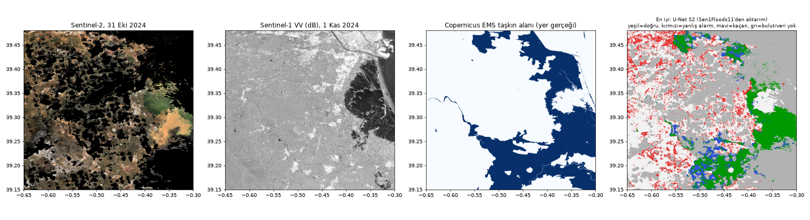<figcaption>Valencia: görüntüler, EMS yer gerçeği ve en iyi tahmin</figcaption></figure>
<h2>Sonuçlar — sel/kasırga kaynaklı bina hasarı (xBD)</h2>
<p><strong>Model:</strong> 6 kanallı (öncesi+sonrası RGB) U-Net/ResNet18, 5 sınıf (arka plan, hasarsız, az, ağır, yıkılmış). xBD train+tier3'ten olay başına ≤250 görüntü (3304 görüntü), 1024→512 küçültülerek (~1 m/px) 12 epoch eğitildi; en iyi doğrulama xView2 skoru 0.628. Test: xBD test bölümü + tier3 olaylarının ayrılmış %20'si (1313 görüntü). <em>Hasar sınıf F1</em> = 4 hasar sınıfının harmonik ortalaması (xView2 tanımı); <em>bina</em> metrikleri bağlantılı bina bileşenleri üzerinden.</p>
<div class="tw"><table>
<thead>
<tr>
<th>olay</th>
<th>bina</th>
<th>bina bulma F1</th>
<th>hasar sınıf F1</th>
<th>hasarlı/hasarsız F1 (bina)</th>
<th>yıkılmış recall</th>
<th>gerçek hasarlı payı</th>
</tr>
</thead>
<tbody>
<tr>
<td>hurricane-florence</td>
<td>1934</td>
<td>0.724</td>
<td>0.000</td>
<td>0.822</td>
<td>0.000</td>
<td>0.216</td>
</tr>
<tr>
<td>hurricane-harvey</td>
<td>6001</td>
<td>0.780</td>
<td>0.096</td>
<td>0.853</td>
<td>0.018</td>
<td>0.461</td>
</tr>
<tr>
<td>hurricane-matthew</td>
<td>2889</td>
<td>0.637</td>
<td>0.246</td>
<td>0.804</td>
<td>0.392</td>
<td>0.841</td>
</tr>
<tr>
<td>hurricane-michael</td>
<td>5305</td>
<td>0.752</td>
<td>0.239</td>
<td>0.527</td>
<td>0.052</td>
<td>0.352</td>
</tr>
<tr>
<td>midwest-flooding</td>
<td>2069</td>
<td>0.747</td>
<td>0.095</td>
<td>0.449</td>
<td>0.089</td>
<td>0.052</td>
</tr>
<tr>
<td>nepal-flooding</td>
<td>1884</td>
<td>0.726</td>
<td>0.185</td>
<td>0.586</td>
<td>0.000</td>
<td>0.265</td>
</tr>
<tr>
<td><strong>flood (toplam)</strong></td>
<td>3953</td>
<td>0.737</td>
<td>0.129</td>
<td>0.562</td>
<td>0.048</td>
<td>0.153</td>
</tr>
<tr>
<td><strong>hurricane (toplam)</strong></td>
<td>16129</td>
<td>0.755</td>
<td>0.420</td>
<td>0.742</td>
<td>0.260</td>
<td>0.464</td>
</tr>
</tbody>
</table></div>
<figure>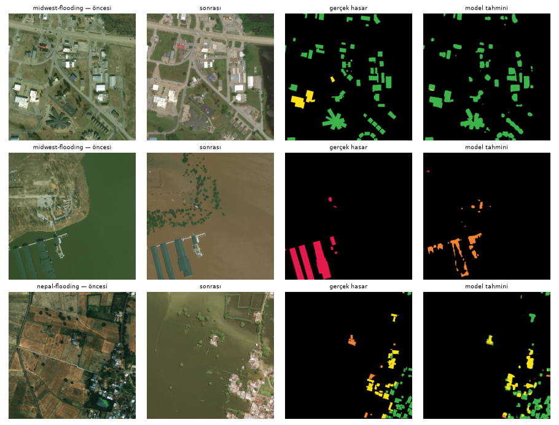<figcaption>xBD sel olayları — rastgele test kareleri</figcaption></figure>
<h2>Sınırlar</h2>
<ul>
<li>EMS yer gerçeği 30–31 Ekim Landsat-8/Sentinel-2'den üretildi; aynı Sentinel-2 sahnesini kullanan yöntemler bir miktar avantajlı, Sentinel-1 (1 Kas) ise dezavantajlı (su çekilmiş).</li>
<li>EMS "gözlenen olay" katmanı çamur/taşkın izlerini de içerir; açık su indeksleri bunları görmez → düşük recall'ın bir kısmı tanım farkı.</li>
<li>Sen1Floods11 kareleri 10 m; ince kentsel sokak taşkınları bu çözünürlükte görünmez.</li>
</ul>
<h2>Kaynaklar</h2>
<ul>
<li>Sen1Floods11 (Bonafilia ve ark., 2020): https://github.com/cloudtostreet/Sen1Floods11</li>
<li>Copernicus EMS EMSR773: https://rapidmapping.emergency.copernicus.eu/EMSR773</li>
<li>Sentinel-1/2, ESA WorldCover: Microsoft Planetary Computer</li>
<li>xBD / xView2 (Gupta ve ark., 2019), Maxar Open Data görüntüleri, CC BY-NC-SA 4.0 — HF mirror <code>hannan022/xview2-xbd</code></li>
</ul></section><section id="03-heyelan" class="rep"><h1>Heyelan — Landslide4Sense (uydu) ve İHA heyelan seti (hava)</h1>
<h2>Özet</h2>
<ul>
<li><strong>Uydu (Sentinel-2 14 bant: 12 spektral + eğim + DEM, 10 m), Landslide4Sense test (800 kare):</strong> en iyi <strong>U-Net S2 + eğim + DEM: F1 0.63</strong>, IoU 0.46. Sadece RGB (Google Earth benzeri bilgi) kullanan model F1 0.58 → çok bantlı + topografya katkısı ölçülebilir.</li>
<li><strong>Kural tabanlı NDVI + eğim</strong> F1 0.19: tek başına yetersiz.</li>
<li><strong>Hava (İHA, RGB, cm–dm çözünürlük), 897 test karesi:</strong> <strong>U-Net RGB (İHA): F1 0.82</strong>, IoU 0.69; RGB toprak indeksi kuralı F1 0.61.</li>
<li>Heyelan pikselleri azınlıkta (uyduda 1.9%, İHA'da 19.1%) — precision/recall dengesi eşiğe çok duyarlı.</li>
</ul>
<h2>Veri ve yer gerçeği</h2>
<div class="tw"><table>
<thead>
<tr>
<th>set</th>
<th>platform</th>
<th>çözünürlük</th>
<th>yer gerçeği</th>
</tr>
</thead>
<tbody>
<tr>
<td>Landslide4Sense (HF <code>ibm-nasa-geospatial/Landslide4sense</code>)</td>
<td>uydu: Sentinel-2 + ALOS PALSAR eğim/DEM</td>
<td>~10 m, 128×128</td>
<td>piksel maskesi; 3799/245/800 train/val/test</td>
</tr>
<tr>
<td>İHA heyelan seti (HF <code>syeddhasnainn/landslide-uav-all</code>, alt küme)</td>
<td>hava: İHA RGB</td>
<td>cm–dm (384×384'e küçültüldü)</td>
<td>piksel maskesi; 1812/431/897 kullanıldı</td>
</tr>
</tbody>
</table></div>
<h2>Sonuçlar — uydu (Landslide4Sense)</h2>
<p>Kural eşiği doğrulamada seçildi: NDVI &lt; -0.20 ve eğim &gt; 0.99 (normalize).
| yöntem | precision | recall | F1 | IoU |
|---|---|---|---|---|
| NDVI + eğim kuralı | 0.107 | 0.731 | 0.187 | 0.103 |
| U-Net RGB (Google Earth benzeri) | 0.579 | 0.575 | 0.577 | 0.405 |
| U-Net 12 bant S2 | 0.497 | 0.700 | 0.581 | 0.410 |
| U-Net S2 + eğim + DEM | 0.592 | 0.680 | 0.632 | 0.463 |</p>
<figure>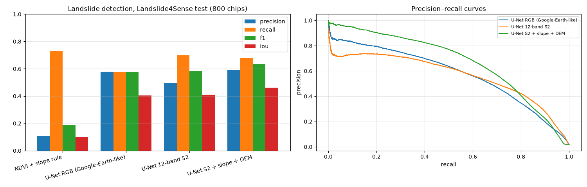<figcaption>Landslide4Sense: metrikler ve precision–recall eğrileri</figcaption></figure>
<figure>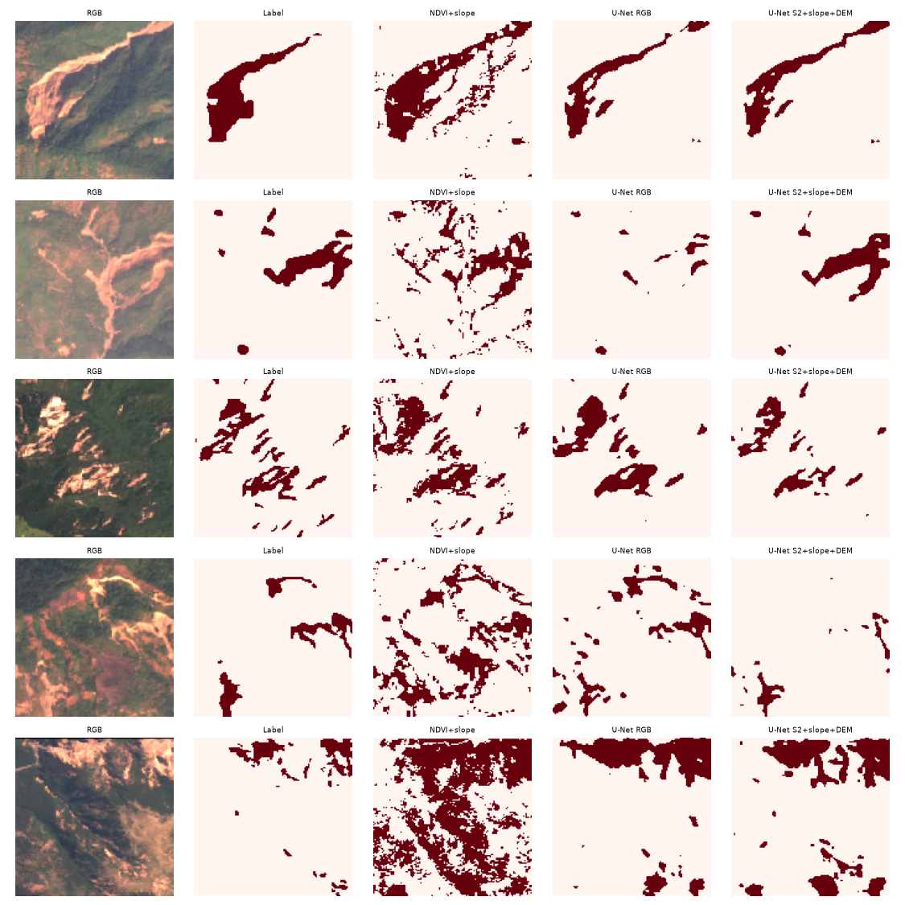<figcaption>Rastgele test kareleri (RGB, etiket, kural, U-Net RGB, U-Net çok bantlı)</figcaption></figure>
<h2>Sonuçlar — hava (İHA)</h2>
<div class="tw"><table>
<thead>
<tr>
<th>yöntem</th>
<th>precision</th>
<th>recall</th>
<th>F1</th>
<th>IoU</th>
</tr>
</thead>
<tbody>
<tr>
<td>RGB toprak indeksi (kural)</td>
<td>0.516</td>
<td>0.745</td>
<td>0.610</td>
<td>0.439</td>
</tr>
<tr>
<td>U-Net RGB (İHA)</td>
<td>0.795</td>
<td>0.838</td>
<td>0.816</td>
<td>0.689</td>
</tr>
</tbody>
</table></div>
<figure>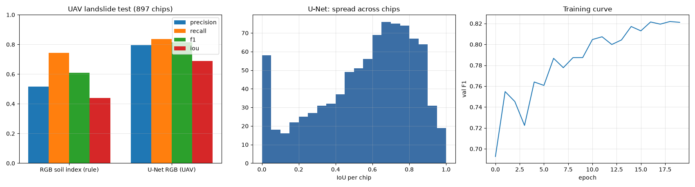<figcaption>İHA heyelan: metrikler, kare başına IoU dağılımı, eğitim eğrisi</figcaption></figure>
<figure>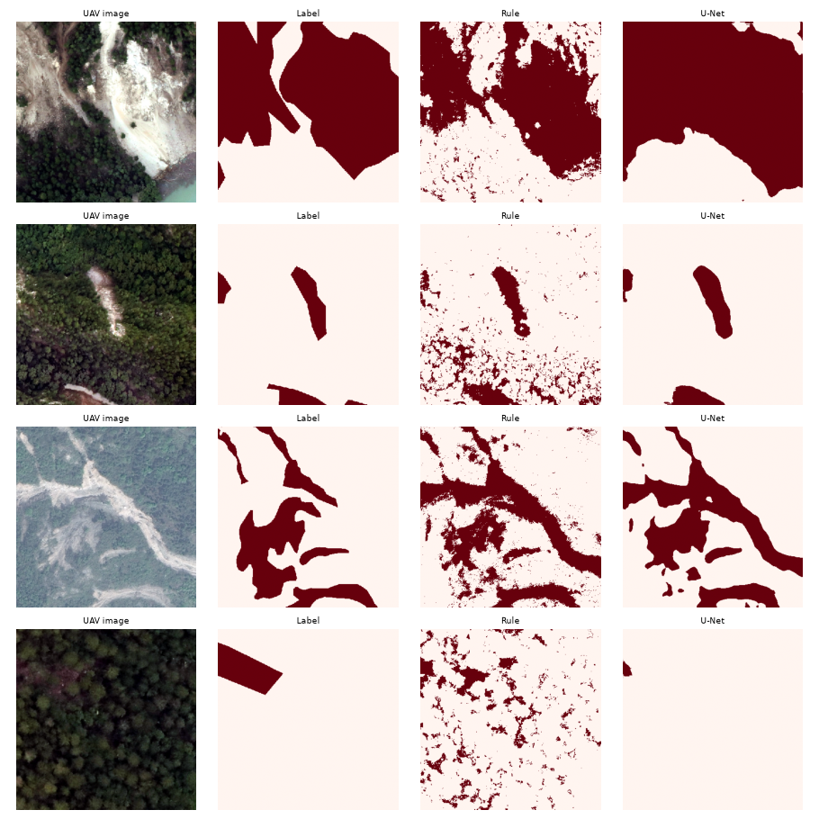<figcaption>Rastgele İHA test kareleri</figcaption></figure>
<h2>Sınırlar</h2>
<ul>
<li>İHA setinin yalnızca bir alt kümesi kullanıldı (19 eğitim parçasından 4'ü); görüntüler 384 px'e küçültüldü.</li>
<li>Landslide4Sense test bölgeleri eğitimle benzer coğrafyalardan; yeni bir bölgeye (örn. 6 Şubat'ın tetiklediği heyelanlar) aktarım ayrıca test edilmeli.</li>
</ul>
<h2>Kaynaklar</h2>
<ul>
<li>Landslide4Sense (Ghorbanzadeh ve ark., 2022): https://github.com/iarai/Landslide4Sense-2022</li>
<li>İHA heyelan seti: https://huggingface.co/datasets/syeddhasnainn/landslide-uav-all</li>
</ul></section><section id="04-hortum" class="rep"><h1>Hortum — xBD (Joplin, Moore, Tuscaloosa) ve Rolling Fork 2023 (hava fotoğrafı)</h1>
<h2>Özet</h2>
<ul>
<li><strong>Uydu (Maxar, xBD) — 3 hortum olayı:</strong> bina bulma F1 0.78, hasarlı/hasarsız bina F1 <strong>0.77</strong>, yıkılmış bina recall 0.71.</li>
<li><strong>Hava fotoğrafı (NAIP uçak görüntüsü, 2021 öncesi / Ağustos 2023 sonrası) — Rolling Fork EF4 hortumu (24 Mart 2023):</strong> xBD uydu modeli hiç eğitim almadan uygulandı; ayırt etme gücü zayıf ama yönü doğru (ortalama skor EF0'dan EF4'e artıyor): NWS saha ekiplerinin 341 yapı hasar noktasına karşı <strong>EF3+ ile EF0–1 ayrımı AUC 0.57</strong>, EF2+ ile hasarsız kontrol binaları AUC 0.58; EF derecesi ile model skoru Spearman ρ=0.14.</li>
</ul>
<h2>Veri ve yer gerçeği</h2>
<div class="tw"><table>
<thead>
<tr>
<th>set</th>
<th>platform</th>
<th>çözünürlük</th>
<th>yer gerçeği</th>
</tr>
</thead>
<tbody>
<tr>
<td>xBD tier3: joplin, moore, tuscaloosa</td>
<td>uydu: Maxar</td>
<td>~0,5 m (modelde ~1 m)</td>
<td>bina hasar seviyeleri</td>
</tr>
<tr>
<td>NAIP Mississippi 2021-11 ve 2023-08 (Planetary Computer)</td>
<td>hava: uçak (USDA NAIP)</td>
<td>0,3 m / 0,6 m → 1 m'ye örneklendi</td>
<td>NOAA NWS Damage Assessment Toolkit: EF dereceli yapı noktaları</td>
</tr>
</tbody>
</table></div>
<h2>Sonuçlar — xBD hortum olayları</h2>
<p><strong>Model:</strong> 6 kanallı (öncesi+sonrası RGB) U-Net/ResNet18, 5 sınıf (arka plan, hasarsız, az, ağır, yıkılmış). xBD train+tier3'ten olay başına ≤250 görüntü (3304 görüntü), 1024→512 küçültülerek (~1 m/px) 12 epoch eğitildi; en iyi doğrulama xView2 skoru 0.628. Test: xBD test bölümü + tier3 olaylarının ayrılmış %20'si (1313 görüntü). <em>Hasar sınıf F1</em> = 4 hasar sınıfının harmonik ortalaması (xView2 tanımı); <em>bina</em> metrikleri bağlantılı bina bileşenleri üzerinden.</p>
<div class="tw"><table>
<thead>
<tr>
<th>olay</th>
<th>bina</th>
<th>bina bulma F1</th>
<th>hasar sınıf F1</th>
<th>hasarlı/hasarsız F1 (bina)</th>
<th>yıkılmış recall</th>
<th>gerçek hasarlı payı</th>
</tr>
</thead>
<tbody>
<tr>
<td>joplin-tornado</td>
<td>2795</td>
<td>0.772</td>
<td>0.652</td>
<td>0.840</td>
<td>0.760</td>
<td>0.423</td>
</tr>
<tr>
<td>moore-tornado</td>
<td>4756</td>
<td>0.804</td>
<td>0.330</td>
<td>0.705</td>
<td>0.664</td>
<td>0.097</td>
</tr>
<tr>
<td>tuscaloosa-tornado</td>
<td>2424</td>
<td>0.754</td>
<td>0.497</td>
<td>0.701</td>
<td>0.504</td>
<td>0.256</td>
</tr>
<tr>
<td><strong>tornado (toplam)</strong></td>
<td>9975</td>
<td>0.783</td>
<td>0.596</td>
<td>0.772</td>
<td>0.705</td>
<td>0.227</td>
</tr>
</tbody>
</table></div>
<figure>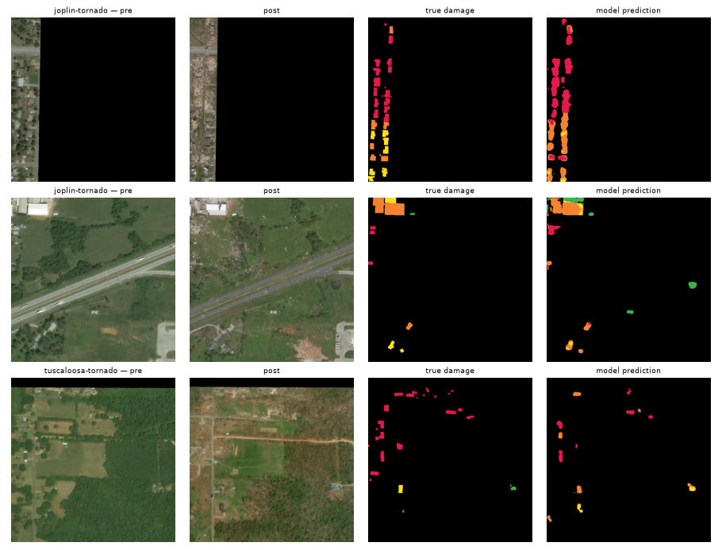<figcaption>xBD hortum olayları — rastgele test kareleri</figcaption></figure>
<h2>Vaka — Rolling Fork, Mississippi (EF4, 24 Mart 2023), hava fotoğrafı</h2>
<p>Her NWS hasar noktası için 256 m × 256 m öncesi/sonrası NAIP kesiti alındı; skor = noktanın 20 m çevresinde modelin <em>ağır hasar + yıkılmış</em> olasılığı (bina pikselleri ağırlıklı). Kontroller: hasar noktalarına &gt;1,5 km uzaklıkta, modelin bina bulduğu rastgele noktalar (93 adet).
| seviye | nokta sayısı | ortalama skor |
|---|---|---|
| none | 93 | 0.296 |
| EF0 | 21 | 0.249 |
| EF1 | 130 | 0.291 |
| EF2 | 118 | 0.359 |
| EF3 | 45 | 0.351 |
| EF4 | 27 | 0.373 |</p>
<figure>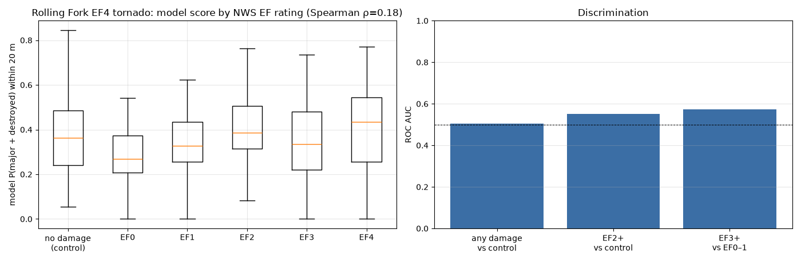<figcaption>Rolling Fork: EF derecesine göre model skoru ve AUC</figcaption></figure>
<figure>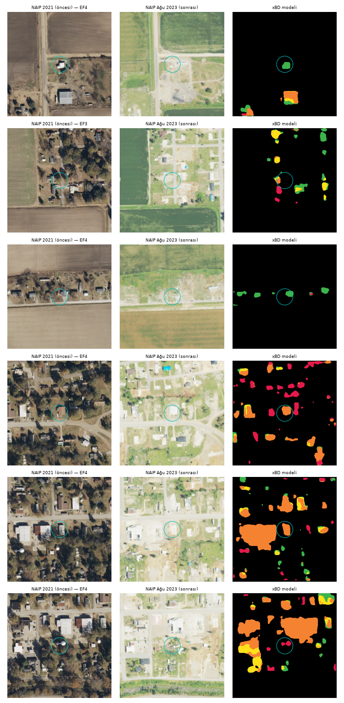<figcaption>Rastgele NAIP kesitleri (camgöbeği daire = 20 m değerlendirme çevresi)</figcaption></figure>
<h2>Sınırlar</h2>
<ul>
<li>NAIP sonrası görüntü olaydan ~4,5 ay sonra: enkaz kaldırılmış, bazı yapılar onarılmış olabilir → hasar düşük görünür.</li>
<li>NAIP (uçak, nadir) ile Maxar (uydu, eğik bakış) arasında renk/ölçek farkı; model hava fotoğrafı ile eğitilmedi.</li>
<li>NWS noktaları yalnızca hasar görmüş yapılardır; "hasarsız" sınıfı kontrol noktalarıyla yaklaşık temsil edildi.</li>
<li><strong>Gözlenen başarısızlık modu:</strong> EF4 noktalarında enkaz Ağustos 2023'e kadar kaldırılmış; model boş arsayı "bina yok" olarak okuyor ve hasar skoru düşük kalıyor (örnek görsellerin ilk ve üçüncü satırı). xBD'de yıkılmış bina hep enkazla görüldüğü için model "kaybolan binayı" hasar olarak öğrenmemiş. Öncesi görüntüdeki bina konumuna göre puanlama bu hatayı azaltır.</li>
</ul>
<h2>Kaynaklar</h2>
<ul>
<li>xBD / xView2 (Gupta ve ark., 2019), Maxar Open Data görüntüleri, CC BY-NC-SA 4.0 — HF mirror <code>hannan022/xview2-xbd</code></li>
<li>NAIP: Microsoft Planetary Computer <code>naip</code></li>
<li>NWS Damage Assessment Toolkit: https://apps.dat.noaa.gov/stormdamage/damageviewer/</li>
</ul></section><section id="05-dolu" class="rep"><h1>Dolu — Nebraska/Iowa, Haziran 2022 (Sentinel-2 vs radar MESH)</h1>
<h2>Özet</h2>
<ul>
<li>Dolu doğrudan "görülmez"; uydu yalnızca <strong>bitki örtüsündeki hasarı</strong> (NDVI düşüşü) görebilir. Yer gerçeği olarak NOAA MRMS <strong>MESH</strong> (radardan tahmini en büyük dolu çapı, ~1 km) kullanıldı; konumu SPC dolu raporlarıyla doğrulandı (raporlardaki MESH medyanı ~36 mm).</li>
<li><strong>Küçük/orta dolu (≥25 mm) neredeyse ayırt edilemiyor:</strong> AUC 0.51–0.61.</li>
<li><strong>Büyük dolu görülebiliyor:</strong> ≥60 mm için AUC <strong>0.84</strong>'e kadar; dolu çapı arttıkça ΔNDVI düzenli artıyor.</li>
<li>Sonuç tarih penceresine çok duyarlı: Haziran'da ekin hızla büyüdüğü için "öncesi" ile "sonrası" arası uzadıkça sinyal bozuluyor.</li>
</ul>
<h2>Veri ve yer gerçeği</h2>
<div class="tw"><table>
<thead>
<tr>
<th>veri</th>
<th>platform</th>
<th>çözünürlük</th>
</tr>
</thead>
<tbody>
<tr>
<td>Sentinel-2 L2A (B04, B08, SCL bulut maskesi) — Planetary Computer</td>
<td>uydu</td>
<td>10 m → 0,0025° (~250 m) hücreye ortalandı</td>
</tr>
<tr>
<td>ESA WorldCover 2021 (tarım alanı maskesi)</td>
<td>uydu ürünü</td>
<td>10 m</td>
</tr>
<tr>
<td>NOAA MRMS MESH_Max_1440min (IEM arşivi)</td>
<td>yer radarı</td>
<td>0,01° (~1 km)</td>
</tr>
<tr>
<td>NOAA SPC dolu raporları</td>
<td>gözlemci</td>
<td>nokta</td>
</tr>
</tbody>
</table></div>
<h2>Sonuçlar</h2>
<p>Pozitif: MESH ≥ 25 mm; negatif: aynı dönemde MESH &lt; 10 mm. Skor: ΔNDVI = NDVI(öncesi) − NDVI(sonrası), sadece tarım hücreleri.
| konfigürasyon | geçerli hücre | dolu hücresi | AUC ≥25 mm | AUC ≥40 mm | AUC ≥60 mm | Spearman (MESH, ΔNDVI) | en iyi F1* |
|---|---|---|---|---|---|---|---|
| A: tek olay (14 Haz), öncesi 11–14 / sonrası 16–19 Haz | 467573 | 71535 | 0.512 | 0.597 | 0.704 | 0.111 | 0.415 |
| C: 6–14 Haz olayları, öncesi 1–5 / sonrası 11–14 Haz | 283310 | 65626 | 0.612 | 0.715 | 0.836 | 0.135 | 0.525 |
| B: 6–19 Haz olayları, öncesi 1–5 / sonrası 16–19 Haz | 374634 | 142313 | 0.526 | 0.626 | 0.783 | 0.126 | 0.576 |</p>
<p>* F1 eşiği aynı veride seçildi (iyimser); asıl karşılaştırma ölçütü eşikten bağımsız AUC.</p>
<figure>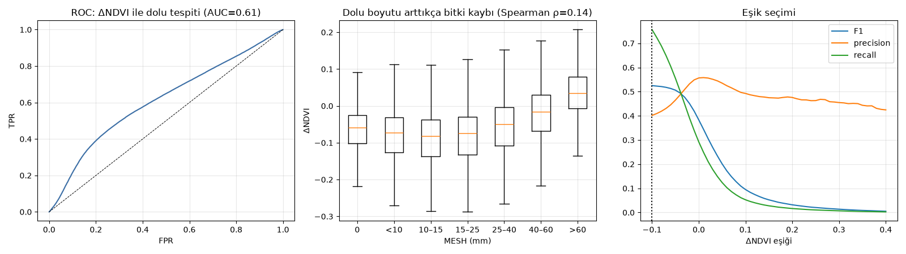<figcaption>Konfigürasyon C: ROC, MESH sınıfına göre ΔNDVI, eşik eğrileri</figcaption></figure>
<figure>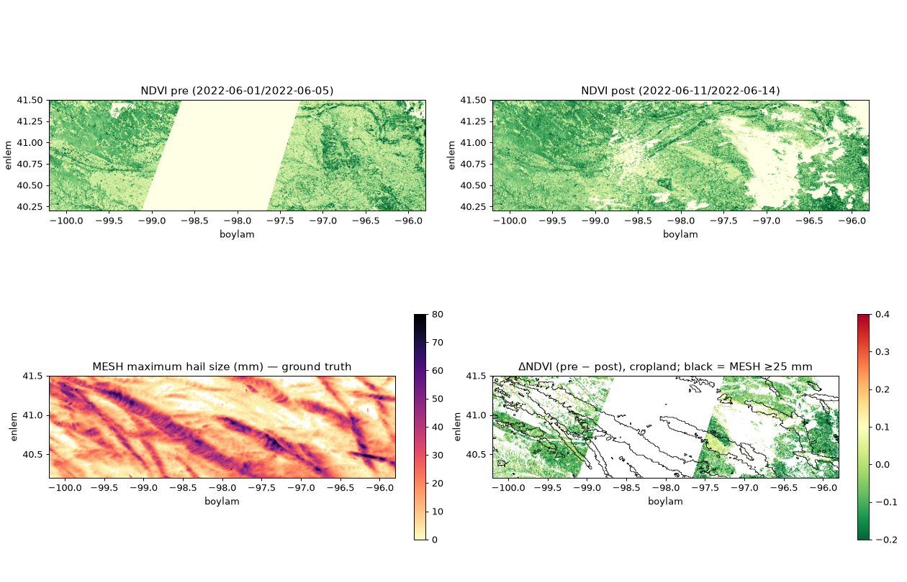<figcaption>Konfigürasyon C: NDVI öncesi/sonrası, MESH ve ΔNDVI haritaları</figcaption></figure>
<figure>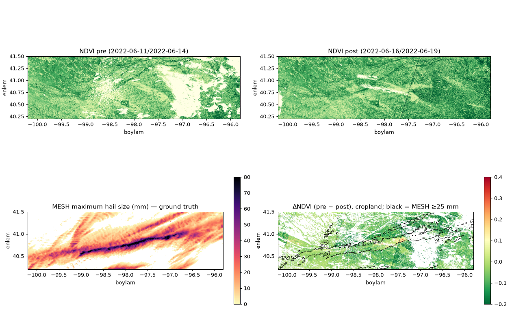<figcaption>Konfigürasyon A: 14 Haziran olayı</figcaption></figure>
<h2>Sınırlar</h2>
<ul>
<li>MESH bir radar tahminidir (dolu çapını sıklıkla abartır, yere düşen doluyu doğrudan ölçmez) — "gerçek" değil, en iyi mevcut alan ölçümü.</li>
<li>~250 m hücreler tarla sınırlarını karıştırır; tarla bazlı analiz ve daha uzun süreli zaman serisi sinyali güçlendirir.</li>
<li>Haziran başında mısır/soya küçük olduğu için hasar NDVI'da sınırlı görünür; Temmuz–Ağustos olayları daha belirgin olabilir.</li>
</ul>
<h2>Kaynaklar</h2>
<ul>
<li>NOAA MRMS (IEM arşivi): https://mtarchive.geol.iastate.edu/</li>
<li>NOAA SPC Storm Reports: https://www.spc.noaa.gov/climo/reports/</li>
<li>CIMSS uydu blogu, Nebraska/Iowa dolu izleri (Haziran 2022): https://cimss.ssec.wisc.edu/satellite-blog/archives/46975</li>
</ul></section><section id="06-asiri-sicak" class="rep"><h1>Aşırı sıcak — Yaz 2023 sıcak hava dalgaları (MODIS yüzey sıcaklığı vs istasyon)</h1>
<h2>Özet</h2>
<ul>
<li><strong>10 şehir</strong> (Phoenix, Las Vegas, El Paso, Sevilla, Roma, Palermo, Atina, Antalya, Adana, Pekin), Haziran–Ağustos 2023; kalibrasyon yalnızca 2022 yazıyla.</li>
<li>Uydu gündüz yüzey sıcaklığı (LST) ile istasyon günlük maksimum hava sıcaklığı ortalama <strong>r = 0.65</strong>; doğrusal kalibrasyon hatası ortalama <strong>3.0 °C</strong> RMSE.</li>
<li><strong>Aşırı sıcak günü tespiti</strong> (istasyon Tmax ≥ 2013–2022 yaz P90): sıralama gücü iyi (<strong>havuz AUC 0.82</strong>), fakat eşikleme yöntemi belirleyici: doğrusal kalibrasyon F1 0.20 (tahminler ortalamaya çekiliyor), yüzdelik eşleme F1 <strong>0.50</strong> (precision 0.70, recall 0.40).</li>
<li>Akdeniz LST anomali haritası Temmuz 2023 "Cerberus" dalgasını Sicilya, Sardunya, Yunanistan, Kuzey Afrika ve Adana çevresinde net gösteriyor (kara ortalaması +0.4 °C).</li>
</ul>
<h2>Veri ve yer gerçeği</h2>
<div class="tw"><table>
<thead>
<tr>
<th>veri</th>
<th>platform</th>
<th>çözünürlük</th>
</tr>
</thead>
<tbody>
<tr>
<td>MODIS Terra MOD11A1 günlük LST (gündüz) — Planetary Computer</td>
<td>uydu</td>
<td>1 km</td>
</tr>
<tr>
<td>MODIS Terra MOD11A2 8 günlük LST (anomali haritası)</td>
<td>uydu</td>
<td>1 km → 0,05°</td>
</tr>
<tr>
<td>Meteostat (NOAA ISD/DWD istasyonları) günlük Tmax, 2013–2023</td>
<td>yer istasyonu</td>
<td>nokta</td>
</tr>
</tbody>
</table></div>
<h2>Sonuçlar — şehir bazında (test yılı 2023)</h2>
<div class="tw"><table>
<thead>
<tr>
<th>şehir</th>
<th>istasyon</th>
<th>gün (bulutsuz)</th>
<th>aşırı sıcak gün</th>
<th>r</th>
<th>RMSE °C</th>
<th>AUC</th>
<th>F1 doğrusal</th>
<th>F1 yüzdelik</th>
</tr>
</thead>
<tbody>
<tr>
<td>Phoenix</td>
<td>Phoenix Sky Harbor Airport</td>
<td>77</td>
<td>34</td>
<td>0.573</td>
<td>3.694</td>
<td>0.814</td>
<td>0.000</td>
<td>0.542</td>
</tr>
<tr>
<td>Las Vegas</td>
<td>McCarran International Airport</td>
<td>78</td>
<td>16</td>
<td>0.790</td>
<td>2.834</td>
<td>0.893</td>
<td>0.000</td>
<td>0.476</td>
</tr>
<tr>
<td>El Paso</td>
<td>El Paso International Airport</td>
<td>75</td>
<td>32</td>
<td>0.733</td>
<td>2.884</td>
<td>0.884</td>
<td>0.000</td>
<td>0.512</td>
</tr>
<tr>
<td>Sevilla</td>
<td>Sevilla / San Pablo</td>
<td>78</td>
<td>20</td>
<td>0.637</td>
<td>2.618</td>
<td>0.771</td>
<td>0.429</td>
<td>0.476</td>
</tr>
<tr>
<td>Roma</td>
<td>Roma Fiumicino</td>
<td>72</td>
<td>21</td>
<td>0.468</td>
<td>2.995</td>
<td>0.653</td>
<td>0.000</td>
<td>0.333</td>
</tr>
<tr>
<td>Palermo</td>
<td>Palermo / Punta Raisi</td>
<td>75</td>
<td>12</td>
<td>0.544</td>
<td>3.377</td>
<td>0.753</td>
<td>0.000</td>
<td>0.125</td>
</tr>
<tr>
<td>Atina</td>
<td>El Venizelos / Liádha</td>
<td>81</td>
<td>20</td>
<td>0.689</td>
<td>2.587</td>
<td>0.892</td>
<td>0.462</td>
<td>0.622</td>
</tr>
<tr>
<td>Antalya</td>
<td>Antalya</td>
<td>82</td>
<td>14</td>
<td>0.868</td>
<td>3.105</td>
<td>0.963</td>
<td>0.000</td>
<td>0.250</td>
</tr>
<tr>
<td>Adana</td>
<td>Adana / Sakirpasa</td>
<td>66</td>
<td>27</td>
<td>0.585</td>
<td>2.890</td>
<td>0.800</td>
<td>0.000</td>
<td>0.432</td>
</tr>
<tr>
<td>Pekin</td>
<td>Beijing</td>
<td>46</td>
<td>24</td>
<td>0.651</td>
<td>2.777</td>
<td>0.854</td>
<td>0.684</td>
<td>0.766</td>
</tr>
</tbody>
</table></div>
<figure>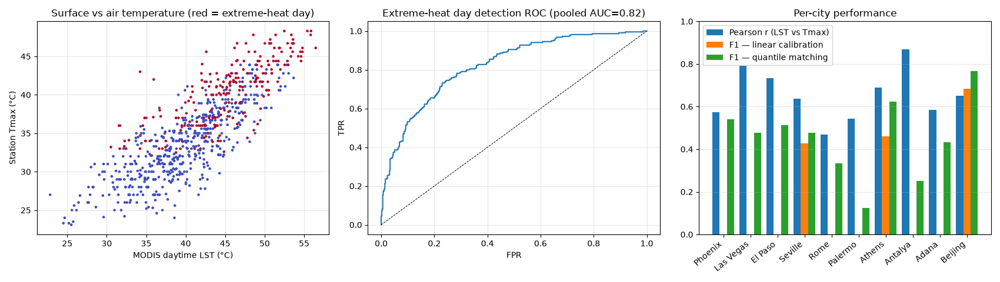<figcaption>LST–Tmax ilişkisi, aşırı sıcak günü ROC ve şehir bazında performans</figcaption></figure>
<figure>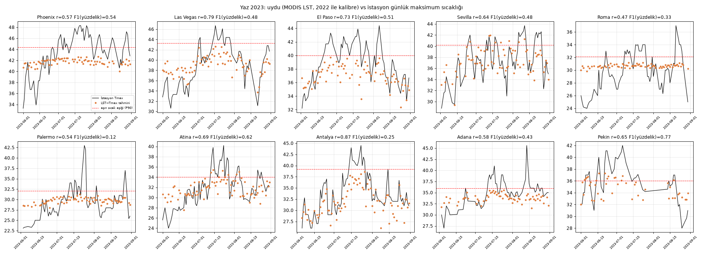<figcaption>Yaz 2023 zaman serileri: istasyon Tmax ve uydu tahmini</figcaption></figure>
<figure>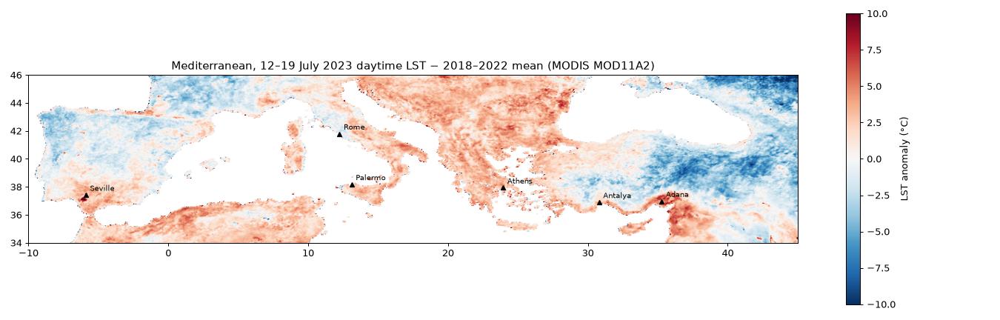<figcaption>12–19 Temmuz 2023 LST anomalisi (2018–2022 ortalamasına göre)</figcaption></figure>
<h2>Sınırlar</h2>
<ul>
<li>LST yüzey sıcaklığıdır, hava sıcaklığı değil; kentsel yüzeyler/çıplak toprak gündüz 10–20 °C daha sıcak olabilir.</li>
<li>Bulutlu günlerde ölçüm yok (gün sayısı sütunu); Pekin'de muson nedeniyle yaz günlerinin ~yarısı kayıp.</li>
<li>2023, 2022'den belirgin sıcaktı: 2022 oranıyla kalibre edilen eşikler 2023'teki aşırı gün sayısını eksik tahmin ediyor (recall düşük).</li>
</ul>
<h2>Kaynaklar</h2>
<ul>
<li>MODIS LST (Wan ve ark.), Microsoft Planetary Computer <code>modis-11A1-061</code>, <code>modis-11A2-061</code></li>
<li>Meteostat: https://meteostat.net</li>
</ul></section><section id="07-yangin" class="rep"><h1>Yangın — yanık alanı (Sentinel-2 dNBR) ve bina hasarı (xBD)</h1>
<h2>Özet</h2>
<ul>
<li><strong>Yanık alanı, 4 yangın, resmi sınırlara karşı:</strong> Palisades IoU 0.86, Eaton IoU 0.72, Camp IoU 0.54, Manavgat IoU 0.72 (en iyi eşik).</li>
<li>Tek bir standart eşik (USGS dNBR &gt; 0,10) eğitim olmadan çoğu yangında iyi çalışıyor; hatalar resmi sınır içindeki yanmamış adacıklar, hasat edilen tarlalar ve bulut kaynaklı.</li>
<li><strong>Yangın kaynaklı bina hasarı (xBD, 5 yangın olayı):</strong> hasarlı/hasarsız bina F1 <strong>0.79</strong>, yıkılmış bina recall 0.75 — yangın, xBD'de en iyi tespit edilen afet türlerinden (yanmış binalar ikili: ya ayakta ya kül).</li>
</ul>
<h2>Veri ve yer gerçeği</h2>
<div class="tw"><table>
<thead>
<tr>
<th>veri</th>
<th>platform</th>
<th>çözünürlük</th>
<th>yer gerçeği</th>
</tr>
</thead>
<tbody>
<tr>
<td>Sentinel-2 L2A B08/B12 öncesi–sonrası mozaik — Planetary Computer</td>
<td>uydu</td>
<td>20 m (~25 m grid)</td>
<td>NIFC WFIGS / InterAgency yangın sınırları (ABD), EFFIS yanık alanı (Manavgat)</td>
</tr>
<tr>
<td>xBD: socal, santa-rosa, woolsey, portugal, pinery</td>
<td>uydu: Maxar</td>
<td>~0,5 m (modelde ~1 m)</td>
<td>bina hasar seviyeleri</td>
</tr>
</tbody>
</table></div>
<h2>Sonuçlar — yanık alanı</h2>
<div class="tw"><table>
<thead>
<tr>
<th>yangın</th>
<th>yöntem</th>
<th>precision</th>
<th>recall</th>
<th>F1</th>
<th>IoU</th>
<th>resmi alan km²</th>
<th>uydu alanı km²**</th>
</tr>
</thead>
<tbody>
<tr>
<td>Palisades (LA, Oca 2025)</td>
<td>dNBR&gt;0.10 (USGS düşük şiddet)</td>
<td>0.849</td>
<td>0.967</td>
<td>0.904</td>
<td>0.825</td>
<td>96.352</td>
<td>106.656</td>
</tr>
<tr>
<td>Palisades (LA, Oca 2025)</td>
<td>dNBR&gt;0.27 (USGS orta-düşük)</td>
<td>0.987</td>
<td>0.860</td>
<td>0.919</td>
<td>0.851</td>
<td>96.352</td>
<td>81.654</td>
</tr>
<tr>
<td>Palisades (LA, Oca 2025)</td>
<td>Otsu (0.26)</td>
<td>0.986</td>
<td>0.867</td>
<td>0.922</td>
<td>0.856</td>
<td>96.352</td>
<td>82.379</td>
</tr>
<tr>
<td>Eaton (LA, Oca 2025)</td>
<td>dNBR&gt;0.10 (USGS düşük şiddet)</td>
<td>0.755</td>
<td>0.939</td>
<td>0.837</td>
<td>0.720</td>
<td>56.882</td>
<td>52.229</td>
</tr>
<tr>
<td>Eaton (LA, Oca 2025)</td>
<td>dNBR&gt;0.27 (USGS orta-düşük)</td>
<td>0.974</td>
<td>0.694</td>
<td>0.810</td>
<td>0.681</td>
<td>56.882</td>
<td>29.913</td>
</tr>
<tr>
<td>Eaton (LA, Oca 2025)</td>
<td>Otsu (0.24)</td>
<td>0.964</td>
<td>0.743</td>
<td>0.839</td>
<td>0.723</td>
<td>56.882</td>
<td>32.352</td>
</tr>
<tr>
<td>Camp (Paradise, Kas 2018)</td>
<td>dNBR&gt;0.10 (USGS düşük şiddet)</td>
<td>0.631</td>
<td>0.792</td>
<td>0.702</td>
<td>0.541</td>
<td>621.322</td>
<td>780.138</td>
</tr>
<tr>
<td>Camp (Paradise, Kas 2018)</td>
<td>dNBR&gt;0.27 (USGS orta-düşük)</td>
<td>0.833</td>
<td>0.551</td>
<td>0.663</td>
<td>0.496</td>
<td>621.322</td>
<td>410.582</td>
</tr>
<tr>
<td>Camp (Paradise, Kas 2018)</td>
<td>Otsu (0.27)</td>
<td>0.834</td>
<td>0.549</td>
<td>0.662</td>
<td>0.495</td>
<td>621.322</td>
<td>408.195</td>
</tr>
<tr>
<td>Manavgat (Antalya, Tem 2021)</td>
<td>dNBR&gt;0.10 (USGS düşük şiddet)</td>
<td>0.824</td>
<td>0.853</td>
<td>0.839</td>
<td>0.722</td>
<td>548.800</td>
<td>568.184</td>
</tr>
<tr>
<td>Manavgat (Antalya, Tem 2021)</td>
<td>dNBR&gt;0.27 (USGS orta-düşük)</td>
<td>0.909</td>
<td>0.625</td>
<td>0.741</td>
<td>0.589</td>
<td>548.800</td>
<td>377.419</td>
</tr>
<tr>
<td>Manavgat (Antalya, Tem 2021)</td>
<td>Otsu (0.28)</td>
<td>0.913</td>
<td>0.603</td>
<td>0.726</td>
<td>0.570</td>
<td>548.800</td>
<td>362.524</td>
</tr>
</tbody>
</table></div>
<p>** Uydu alanı, sınırın %25 tamponlu kutusunun tamamında ölçüldü (kutudaki başka yanıklar da sayılır).</p>
<figure>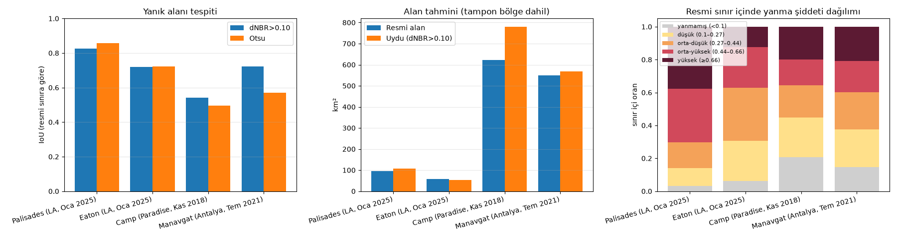<figcaption>IoU, alan karşılaştırması, sınır içi yanma şiddeti dağılımı</figcaption></figure>
<figure>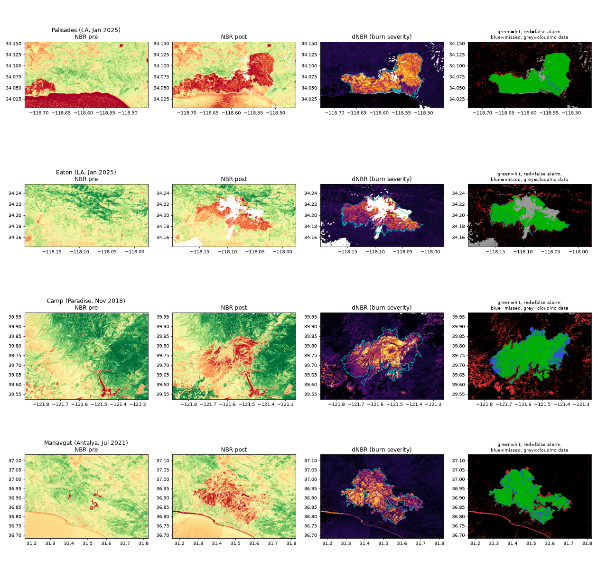<figcaption>NBR öncesi/sonrası, dNBR ve hata haritası</figcaption></figure>
<h2>Sonuçlar — bina hasarı (xBD yangın olayları)</h2>
<p><strong>Model:</strong> 6 kanallı (öncesi+sonrası RGB) U-Net/ResNet18, 5 sınıf (arka plan, hasarsız, az, ağır, yıkılmış). xBD train+tier3'ten olay başına ≤250 görüntü (3304 görüntü), 1024→512 küçültülerek (~1 m/px) 12 epoch eğitildi; en iyi doğrulama xView2 skoru 0.628. Test: xBD test bölümü + tier3 olaylarının ayrılmış %20'si (1313 görüntü). <em>Hasar sınıf F1</em> = 4 hasar sınıfının harmonik ortalaması (xView2 tanımı); <em>bina</em> metrikleri bağlantılı bina bileşenleri üzerinden.</p>
<div class="tw"><table>
<thead>
<tr>
<th>olay</th>
<th>bina</th>
<th>bina bulma F1</th>
<th>hasar sınıf F1</th>
<th>hasarlı/hasarsız F1 (bina)</th>
<th>yıkılmış recall</th>
<th>gerçek hasarlı payı</th>
</tr>
</thead>
<tbody>
<tr>
<td>pinery-bushfire</td>
<td>335</td>
<td>0.722</td>
<td>0.000</td>
<td>0.205</td>
<td>0.167</td>
<td>0.104</td>
</tr>
<tr>
<td>portugal-wildfire</td>
<td>829</td>
<td>0.706</td>
<td>0.000</td>
<td>0.289</td>
<td>0.194</td>
<td>0.057</td>
</tr>
<tr>
<td>santa-rosa-wildfire</td>
<td>3833</td>
<td>0.753</td>
<td>0.001</td>
<td>0.922</td>
<td>0.924</td>
<td>0.247</td>
</tr>
<tr>
<td>socal-fire</td>
<td>3575</td>
<td>0.695</td>
<td>0.082</td>
<td>0.603</td>
<td>0.488</td>
<td>0.131</td>
</tr>
<tr>
<td>woolsey-fire</td>
<td>743</td>
<td>0.652</td>
<td>0.000</td>
<td>0.702</td>
<td>0.598</td>
<td>0.289</td>
</tr>
<tr>
<td><strong>fire (toplam)</strong></td>
<td>9315</td>
<td>0.718</td>
<td>0.044</td>
<td>0.791</td>
<td>0.746</td>
<td>0.184</td>
</tr>
</tbody>
</table></div>
<figure>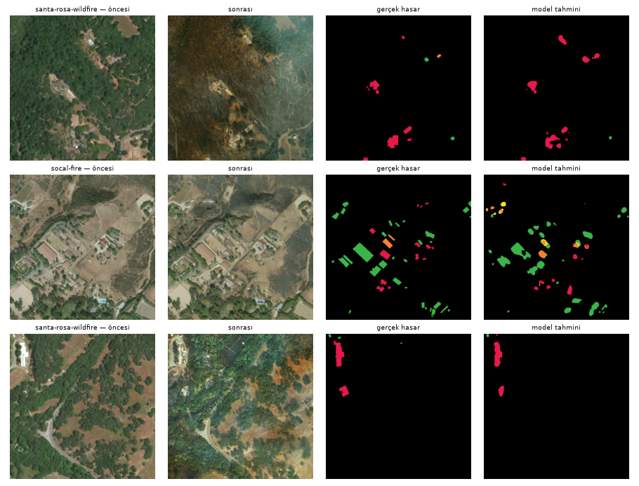<figcaption>xBD yangın olayları — rastgele test kareleri</figcaption></figure>
<h2>Sınırlar</h2>
<ul>
<li>Resmi sınırlar yanmamış adacıkları da kapsar; IoU üst sınırı 1'in altındadır.</li>
<li>EFFIS sınırı MODIS/VIIRS + Sentinel-2 tabanlı, NIFC sınırları hava/saha ölçümlü — kaynaklar arası tutarlılık farklı.</li>
<li>Camp yangınında "sonrası" Aralık mozaiğinde bulut/kar ve hasat edilmiş tarlalar yanlış alarm üretiyor.</li>
</ul>
<h2>Kaynaklar</h2>
<ul>
<li>NIFC WFIGS Interagency Perimeters: https://data-nifc.opendata.arcgis.com</li>
<li>EFFIS: https://effis.jrc.ec.europa.eu</li>
<li>xBD / xView2 (Gupta ve ark., 2019), Maxar Open Data görüntüleri, CC BY-NC-SA 4.0 — HF mirror <code>hannan022/xview2-xbd</code></li>
</ul></section></main>
<script>
const tabs = [...document.querySelectorAll("nav a")], reps = [...document.querySelectorAll(".rep")];
function show(id) {
  if (!reps.some(r => r.id === id)) id = "genel";
  reps.forEach(r => r.classList.toggle("on", r.id === id));
  tabs.forEach(t => t.classList.toggle("on", t.dataset.t === id));
}
document.addEventListener("click", e => {
  const a = e.target.closest('a[href^="#"]'); if (!a) return;
  e.preventDefault(); const id = a.getAttribute("href").slice(1); show(id); history.replaceState(null, "", "#" + id); window.scrollTo(0, 0);
});
show(location.hash.slice(1) || "genel");
</script>
